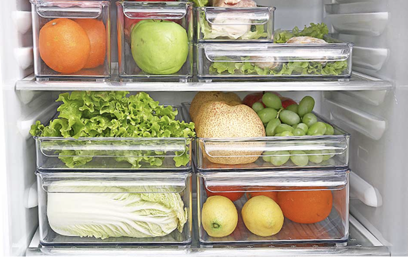
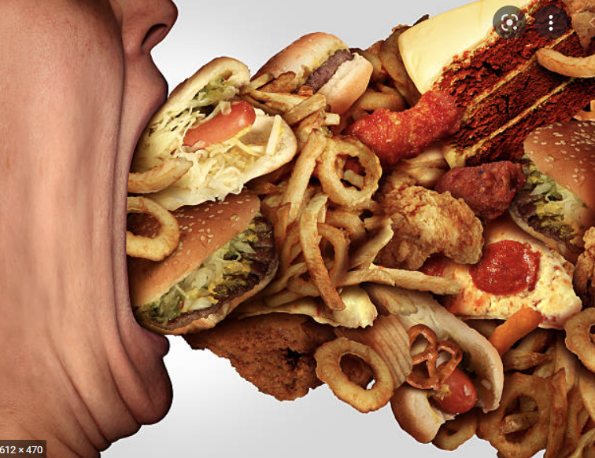
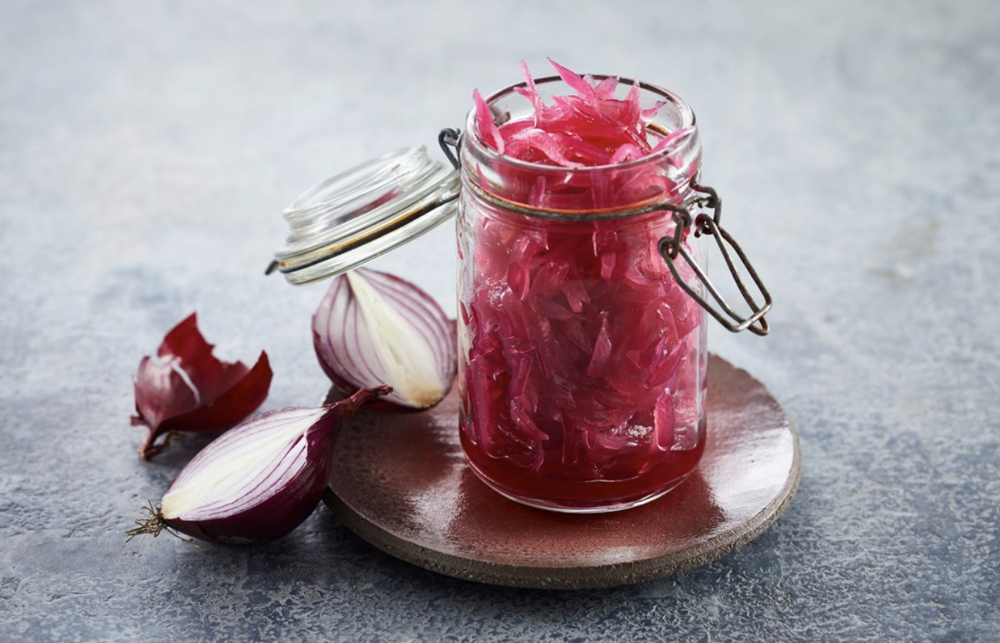
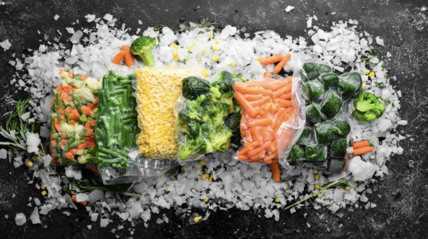
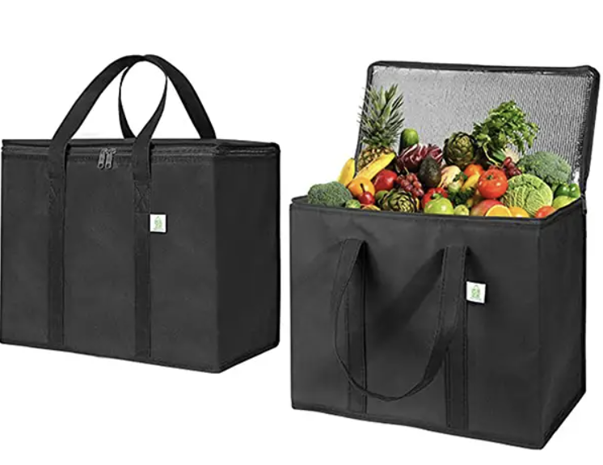

Indtast antal personer i jeres organisation for at udregne jeres madspild
MADSPILD
pr. dag i DKK:
-
pr. år i DKK:
-
pr. dag i KG:
-
pr. år i KG:
-
Tips til at undgå madspild i hjemmet:
1: HAV EN RESTDAG
Sammenkogte retter og supper er ideelle til komme i bund i køleskabet.
Hav en ugentlig dag, hvor du laver en af dine bedste tøm køleskabet-retter.
3: OPBYG BASISLAGER
Hav et godt lager af konserves, krydderier og tørvarer.
Bønner, færdigsovse eller flåede tomater er ideelle værktøjer til at lave rester om til nye retter.

6: INDRET DIT KØLESKAB
Det, du ser først, bruger du først. Sørg derfor for at sætte varer, der er ved at løbe ud, forrest i dit køleskab. Det er lige så enkelt, som det er effektivt

8: UNDGÅ FLERSTYKSFÆLDEN
Hvis der er tilbud på to, og du alligevel smider halvdelen ud – hvor meget har du så sparet? Køb det, du spiser. Ikke det, der er tilbud på

10: LÆR AT SYLTE
Din mormor havde ret. Syltning er en god måde at give grøntsagerne ekstra liv. Lær at lave en sød og sur syltelage, og kom i gang med krukkerne.
2: KØB IKKE IND PÅ TOM MAVE
Vi køber for meget, når vi er sultne. Køb ind efter et måltid eller spis et æble, inden du køber ind.
Så fylder du kun kurven med det, du har brug for.

5: FRYS GRØNT
Husk, at du kan fryse grøntsager. Næringsværdien bevares og hvis du skærer ud i stykker, er de lette at komme direkte i resteretter.
7: GENOPLIV GRØNTSAGERNE
Lev dine grøntsager op med koldt vand. Tre timer i koldt vand i køleskabet kan gøre en slatten gulerod klar til kamp igen.
<
9: HAV GODE BØTTER OG POSER
Med plasticbøtter og fryseposer på lager, er det nemmere at gemme rester. Mange retter er alligevel bedst dagen derpå.